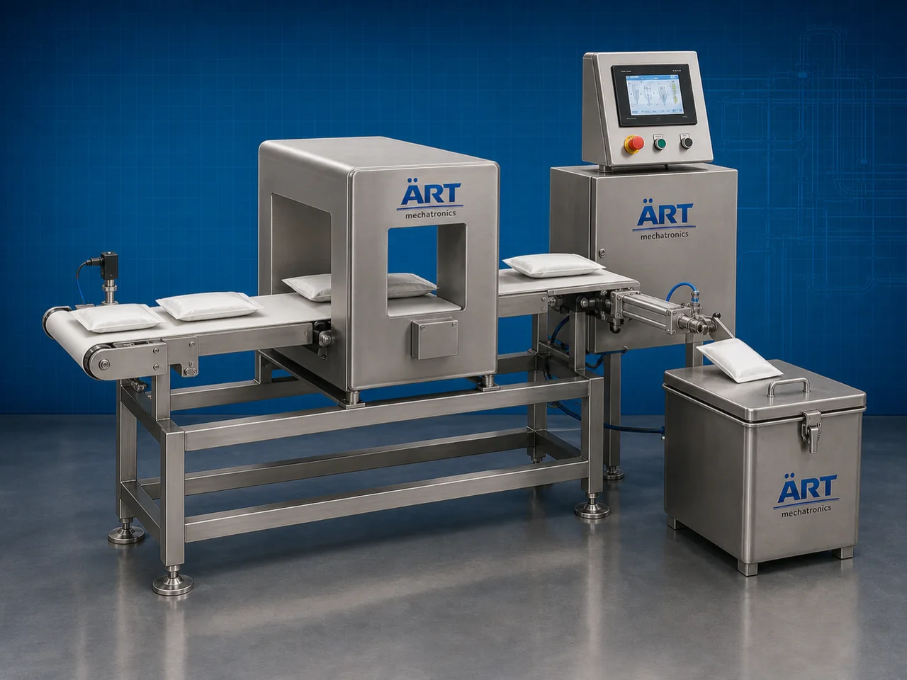

Metal Detection System (Industrial Metal Detector Machine)
A Metal Detection System, also known as an Industrial Metal Detector Machine, Product Contamination Detection System, Inline Metal Detector, or Packaging Metal Inspection Machine, is an advanced industrial quality inspection solution designed for automatic metal contamination detection, product…

About the Metal Detection
Metal detection systems are widely used for: ✔ Metal contamination inspection ✔ Product safety verification ✔ Inline packaging inspection ✔ Food safety compliance ✔ Pharmaceutical product inspection ✔ Raw material quality control ✔ Final product contamination detection ✔ Industrial packaging quality assurance
The machine improves: ✔ Product safety ✔ Brand protection ✔ Quality assurance ✔ Packaging compliance ✔ Production efficiency ✔ Customer trust ✔ Export quality standards
Industrial metal detector machines use: ✔ Electromagnetic detection technology ✔ High sensitivity sensor systems ✔ PLC and HMI automation controls ✔ Conveyor synchronized inspection systems ✔ Automatic rejection mechanisms
to automatically detect ferrous, non-ferrous, and stainless-steel contamination with superior accuracy and high production efficiency.
Metal detection systems are widely used in industries such as:
Food processing industries Pharmaceutical industries Chemical industries Plastic industries Textile industries Packaging industries Cosmetic industries FMCG industries
where contamination-free production, product safety, and regulatory compliance are essential.
The machine is highly suitable for: ✔ Food contamination inspection ✔ Pharmaceutical safety inspection ✔ Packaging line quality control ✔ Powder and granule inspection ✔ Final product verification ✔ Export quality assurance systems
ART Mechatronics offers high-performance metal detection systems, engineered for continuous industrial operation, precision contamination detection, reliable inspection performance, and long-term industrial quality assurance.
Working Principle of Metal Detection System
- 1. Product Feeding & Conveyor Handling Products are automatically transferred through synchronized conveyor systems for inspection operation.
- 2. Electromagnetic Detection Process Machine automatically scans products using advanced electromagnetic field technology to detect metal contamination.
High sensitivity sensors ensure accurate contamination detection and smooth product handling.
- 3. Product Inspection Operation Machine handles inspection of: ✔ Powders ✔ Granules ✔ Snacks ✔ Spices ✔ Pouches ✔ Cartons ✔ Bottles ✔ Industrial packaged products
accurately and continuously.
- 4. Metal Contamination Detection Process Machine detects: Ferrous metals Non-ferrous metals Stainless steel particles Metal fragments Processing contamination
for safe and contamination-free product quality assurance.
- 5. Automatic Rejection & Inspection Integration Optional systems include: Automatic reject systems Alarm systems Data logging systems Validation systems Quality reporting systems
- 6. Finished Product Discharge Approved products discharged automatically for: Packaging operations Warehouse storage Retail distribution Export shipment handling
Types of Metal Detection Systems
- 1. Conveyor Metal Detector Machine Designed for: ✔ Inline packaging inspection applications
- 2. Gravity Feed Metal Detector Suitable for: ✔ Powder and granule inspection systems
- 3. Pipeline Metal Detection System Uses: ✔ Liquid and slurry processing inspection systems
- 4. Pharmaceutical Metal Detector Machine Designed for: ✔ Medicine and healthcare product inspection operations
- 5. High Sensitivity Metal Detection System Suitable for: ✔ Ultra-precision contamination inspection applications
- 6. Fully Automatic Metal Inspection System Designed for: ✔ Complete industrial quality control automation lines
Industries Using Metal Detection Systems
🍅 Food Processing Industry Snacks, spices, grains, namkeen, edible products, and food safety inspection systems. 💊 Pharmaceutical Industry Medicine products, healthcare packaging, and contamination inspection systems. ⚗️ Chemical Industry Industrial powders, chemicals, and quality control inspection systems. 🧴 Cosmetic & Personal Care Industry Cosmetic powders, creams, and packaging safety systems. 📦 Packaging Industry Final packaged product inspection and export quality verification systems. 🛒 FMCG Industry Consumer products and retail packaging safety inspection systems.
Features & Advantages
✔ High-speed automatic metal detection operation ✔ Accurate contamination inspection systems ✔ Detects ferrous, non-ferrous, and stainless steel particles ✔ PLC and automation control systems ✔ Improves product safety and quality assurance ✔ Reduces contamination risk and product recalls ✔ Supports multiple product formats and packaging types ✔ Reliable long-term industrial performance ✔ Smooth integration with packaging automation lines
Technical Highlights
Machine Type: Metal detection system Industrial metal detector machine Contamination inspection system Product Compatibility: Powders Granules Pouches Sachets Cartons Bottles Industrial packaged products Detection Integration: Electromagnetic detection systems Conveyor inspection systems Automatic rejection systems Quality reporting systems Features: PLC control system Touchscreen HMI High sensitivity detection Data logging systems Alarm and rejection systems Applications: Food safety inspection Pharmaceutical inspection Chemical contamination detection Packaging quality control Industrial product inspection Automation: Semi-automatic Fully automatic industrial systems
Turnkey Metal Detection Solutions
ART Mechatronics offers: Complete metal inspection systems Automatic contamination detection solutions Packaging quality control integration systems Conveyor synchronization systems Installation & commissioning After-sales service & AMC
Why Choose Art Mechatronics
Expertise in industrial inspection and automation systems Customized metal detection solutions for multiple industries High-performance and precision inspection technology Advanced PLC and intelligent automation systems Proven industrial quality assurance performance across sectors
Applications
Food Processing Plants Pharmaceutical Manufacturing Facilities Chemical Processing Industries Packaging Inspection Units Cosmetic Manufacturing Plants FMCG Packaging Industries
Get pricing & specs for the Metal Detection
Share the product, target capacity, current process and plant location. These details help our engineers discuss the right machine or line configuration.
One partner, from design to start-up
ART Mechatronics designs, manufactures, installs and commissions your Metal Detection solution with regional presence in India, UAE and Thailand.